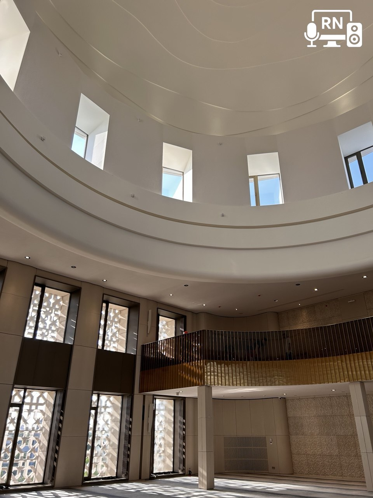
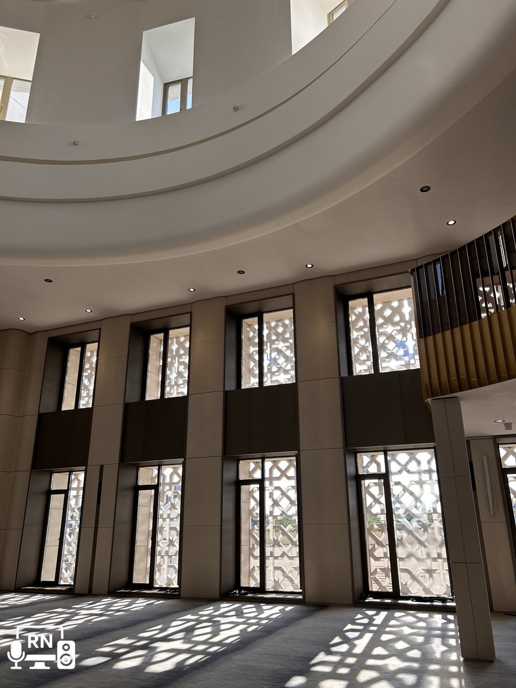
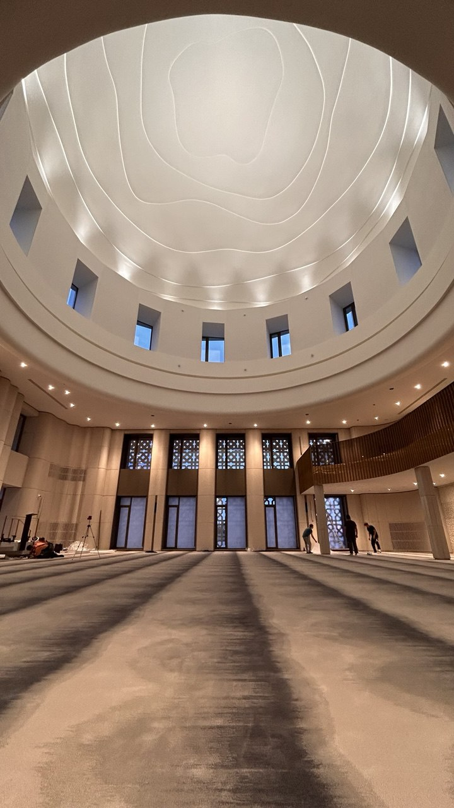
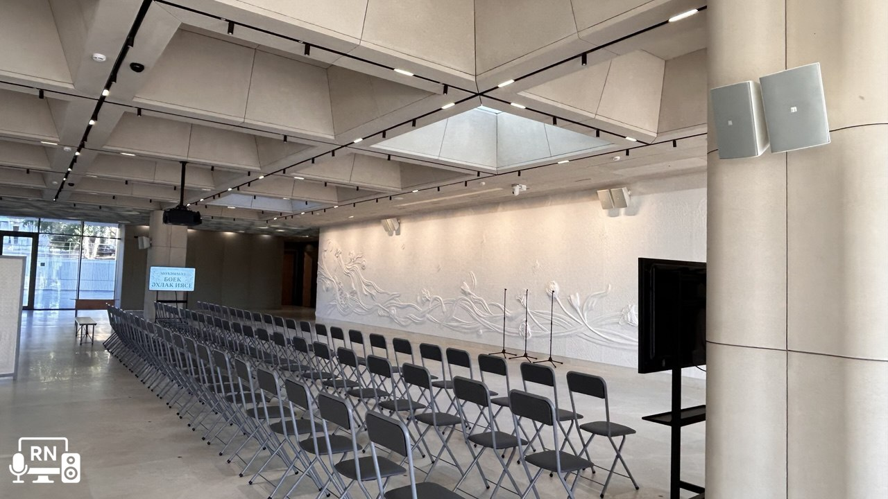

Обо мне
Привет! Меня зовут Рафис Нигматуллин. Я инженер мультимедийных систем, специализирующийся на проектировании, настройке и внедрении AV-решений для современных пространств.
Мой опыт охватывает полный цикл работ — от начального проектирования и подбора оборудования до пусконаладочных работ и сдачи объектов «под ключ». Я верю, что качественная интеграция аудио- и видеотехнологий создаёт не просто удобную среду, а новые возможности для общения, обучения и работы.
Проекты
Адрес: г. Москва, Ленинградский пр-т, д. 11, стр. 1
Роль: инженер по мультимедиа / AV-специалист
Объем работ: оснащение мультимедийным оборудованием более 20 помещений.
Задача: Интеграция аудио- и видеосистемы для мероприятий.
Решение:
- Аудио: Радиосистема Shure, конференц-система ITC, цифровой микшер TaverLab, распределение звука через усилители Ecler.
- Видео: LED-экран Skydigital, выдвижные мониторы Element One, IP-коммутация AVCit.
Результат: Устойчивая работа системы под нагрузкой.
🎬 Видео: Актовый зал в работе
Решение:
- Установлены ЖК-панели 55”.
- Контент через смарт-плееры с управлением расписанием и циклами показа.
Роль: Пусконаладочные работы мультимедийных систем, согласование технических решений с представителями заказчика и смежными организациями.
Аннотация проекта: В рамках проекта строительства Центральной мечети в г. Альметьевск была разработана и внедрена комплексная мультимедийная система. Особое внимание — качеству речевого озвучивания, эстетике, надёжности и гибкости управления. Проект охватывал озвучивание внутренних помещений (молельный зал, многофункциональный зал, ресторан, переговорные) и наружных территорий (минареты, парковые зоны). Реализация велась с использованием современных технологий передачи аудио- и видеосигналов, систем управления и оповещения.
Зоны озвучивания:
- Молельный зал
- Многофункциональный зал
- Ресторан
- Переговорная
- Минареты
- Лестничные марши, холлы и коридоры
Молельный зал:
  - Линейные массивы TOA, 7 акустических систем по периметру
- Радиосистемы: 2 стойки, 2 гарнитуры, 2 дипольные антенны
- Цифровой матричный микшер TOA, медиа-плеер, усилители с DSP
- PTZ-камера 4К, WyreStorm NHD-600-TRX (SDVoE) — 10GbE
Многофункциональный зал:
- Компактные акустические системы TOA
- Радиосистема, беспроводная конгресс-система TOA (1+10)
- Матричный микшер, PTZ-камера, WyreStorm NHD-400 — 1GbE
- Экран 4м, проектор, 4 мобильные панели 55"
Ресторан:
- Потолочные громкоговорители TOA
- Радиосистема, управление через МФЗ
- 3 видеопанели 55"
Переговорная:
- Панель 55", видеоконференц-комплект: камера, спикерфон, микрофон
Минареты:
- 8 всепогодных акустических систем BIAMP, покрытие 360°
Парк и уличные зоны:
- 16 рупорных линейных массивов TOA, 18 встроенных громкоговорителей
Технологии:
- TOA, WyreStorm, BIAMP
- SDVoE, 10GbE / 1GbE сети
- PTZ-камеры 4К, цифровые усилители с DSP
- Радио- и конгресс-системы
Контакты
Email: rafis.nigmatullin@icloud.com
Телефон: +7 915 289-99-86